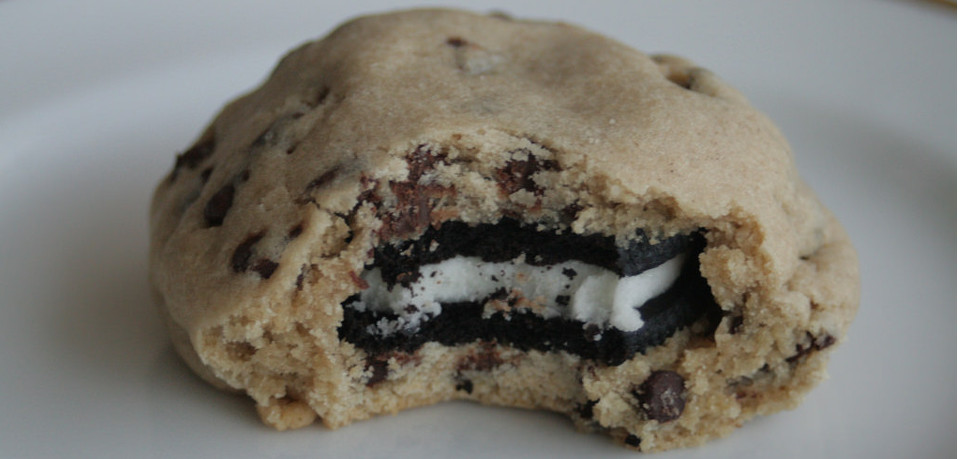

Photo by Melanie
Oreo‐Stuffed Chocolate Chip Cookies
Amount IngredientsDirections
- ¾ cup
- 1 cup + 1½tbsp
- 1 cup
- 2 tsp
- ⅓ cup
- ⅓ cup
- 3¾ cups
- 1½ tsp
- 1 tsp
- ¾ tsp
- 1 cup
- 1 bag
- Vegan butter substitute
- Sugar
- Packed brown sugar
- Pure vanilla extract
- Soy milk
- Vegetable oil
- All‐purpose flour
- Baking powder
- Baking soda
- Salt
- Chocolate Chips
- Oreos
- Preheat oven to 350°F
- In a large bowl combine butter, sugars and vanilla; mix until light and fluffy*
- Add remaining wet ingredients to the sugar mixture, and mix until combined
- In a medium bowl, whisk together flour, baking powder, baking soda and salt
- Gradually add dry mixture to sugar mixture and stir until combined
- Add in chocolate chips
- Take two large scoops of dough and form it around the Oreo
- Bake approximately 9‐13 minutes*
Additional Notes
- It is normal for this mixture to look separated at this stage.*
- Cookies may be cooked more or less depending on your oven and desired level of doneness.*
- Because this dough contains no eggs, it is reasonably safe to eat raw.
- Add this dough to ice cream for easy cookie dough ice cream.
- Try this recipe with different fillings or add‐ins.